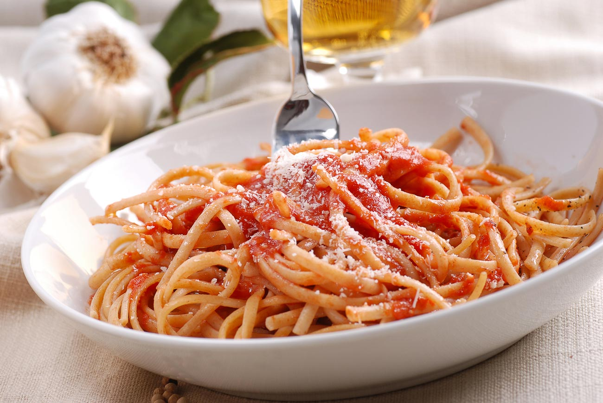

Spaghetti Arrabbiata

Description
The Spaghetti Arrabiata Pasta Recipe is a quick, simple and a delicious pasta,
that is packed with flavors from pasta and a freshly made tomato sauce.
The addition of chillies along with the pasta, makes this a perfect
Indian style pasta recipe.
This recipe saved the day when I had 5 college kids drop by for dinner unexpectedly.
It was a big hit!! Thanks!!
Ingredients
- 1 pound lean ground beef
- 1 (32 ounce) jar spaghetti sauce
- 32 ounces cottage cheese
- 3 cups shredded mozzarella cheese
- 2 eggs
- 1/2 cup grated Parmesan cheese
- 2 teaspoons dried parsley
- salt to taste
- griund black pepper to taste
- 9 lasagna noodles
- 1/2 cup water
Steps
- Preheat the oven to 175 degrees Celcius.
- Warm a large skillet over medium heat. Add ground beef and cook 8 to 10 minutes.
Drain the grease. Stir in spaghetti sauce and simmer for 5 minutes.
- Mix together cottage cheese, 2 cups of mozzarella cheese, eggs, 1/2 of the grated Parmesan
cheese, dried parsley, salt and pepper in a large bowl.
- Bake in preheated oven for 45 minutes.